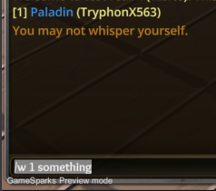
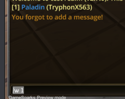

Mostly fixing patch bugs from: https://forum.imperium42.com/t/patch-v2-7-0-live/82791

Major Fixes
- Mastermind can now [non-pity] convert normally, again.
- Inquisitor’s initial heretic targets are back to normal, again.
- Flirt abil now considers Empower abil (the feedback would say it worked, but it didn’t actually work until now).
- Probe abil now returns class name instead of type.
- *Fixed bleed
%PLAYER_LIST%feedback bug on recipient when immune.
Minor Fixes
- Fixed King’s Royal Finger abil that wasn’t showing the target.
- Fixed Happy Hour abil feedback in a couple spots.
- Fixed Overlook abil feedback when no one visits.
- Some stat fixes. However, note that stats will still be “off”, as we’re currently using legacy stats that are not necessarily accurate. We’ll eventually reset stats but keep the old stats in a legacy section.
New Features
- Whispers now show feedback on typo’d, incomplete, or invalid whispers. --Tryph (thx @anon97870008)


–Xblade